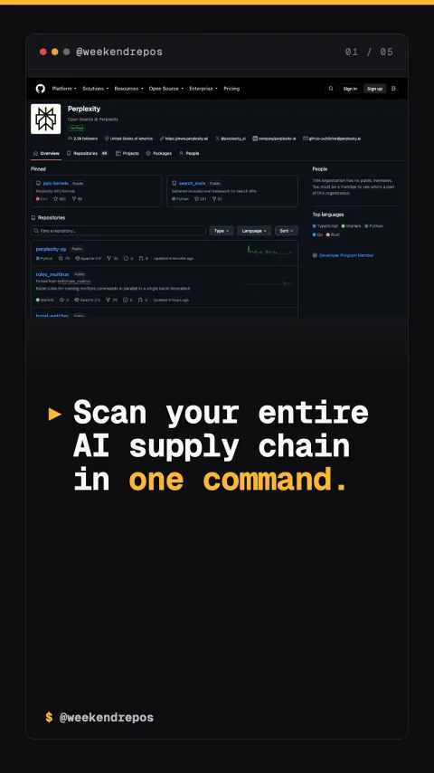

bumblebee
A security scanner for MCP servers and AI extensions

Scan your entire AI supply chain in one command.
Audits MCP servers, VS Code extensions, and package registries.
Instead of running separate audit tools for npm, PyPI, and editor plugins, Bumblebee analyzes permissions and vulnerabilities across your whole AI setup simultaneously.
multi-ecosystem auditing · npm · pypi · mcp · vscode
Read-only inspection prevents agent environment contamination.
Bumblebee operates in pure read-only mode, inspecting manifests and network permissions without modifying your development environment.
read-only static analysis · zero credential exposure
Detects permission over-reach and secret leakage vectors.
It flags MCP servers requesting full root disk access or unverified outbound internet webhooks, protecting sensitive API keys from prompt injection exfiltration.
prompt injection defense · exfiltration prevention
Open-source on GitHub for local and CI pipeline audits.
Bumblebee is free and open-source, easily integrating into GitHub Actions to block compromised PRs.
github.com/PerplexityAI · open-source AI security